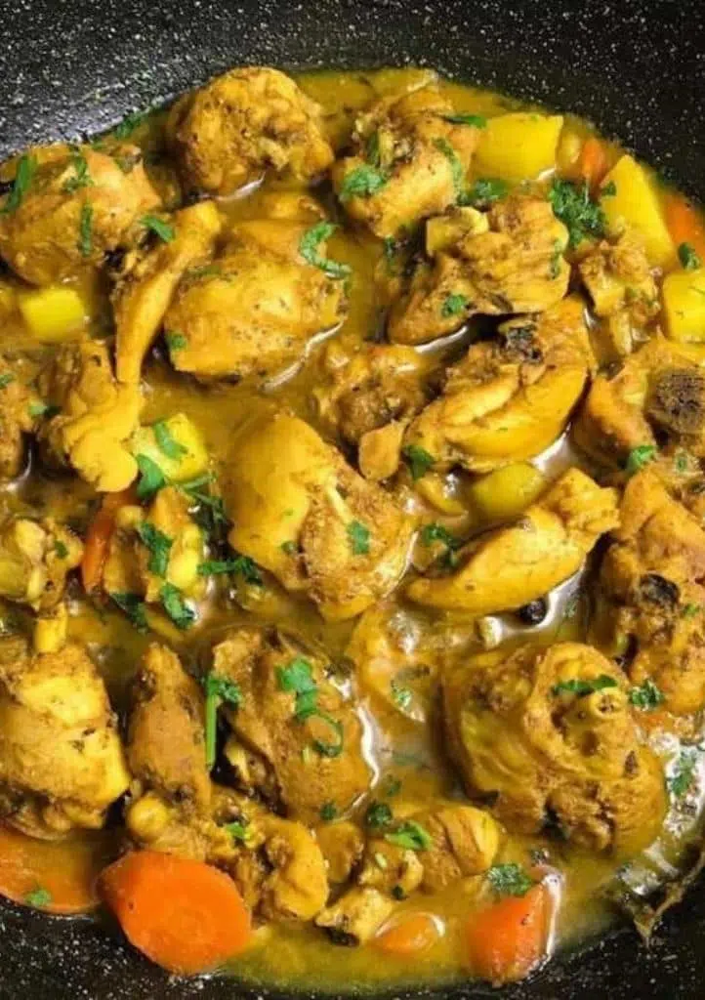

Jamaican Curry Chicken

What you'll need
- Chicken: Skin removed and chopped into small pieces
.
- Curry powder: Use Jamaican curry powder.
- All-purpose seasoning: I use all-purpose but chicken seasoning is just as good.
- Pimento (all-spice), thyme, onion, ginger, garlic, scallion, scotch bonnet pepper: essential flavour
- Carrot and white potato: in every Jamaican curry.